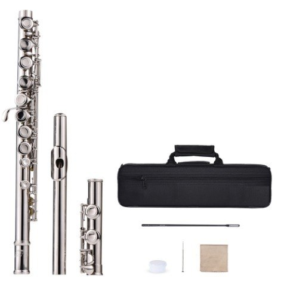

Compre instrumentos dos patrocinadores com descontos aqui na Revel~ Basta pegar o código do produto no card.
Produto de parceiros
Fender Standard Stratocaster
Marca:
Fender
Código:
HY3648
Equipada com um captador humbucking e dois captadores single coil, a HSS tem um som ligeiramente mais agressivo e encorpado
do que a Standard Stratocaster, adicionando ainda mais timbres no arsenal sônico da Stratocaster.
Beech Custom Red Apple Lacquer
Marca:
Yamaha
Código:
HY3648
Os cascos da Yamaha Beech Custom são a personificação máxima da sonoridade do Beech. Esta madeira "mistura" o que há de melhor
no Maple e Birch, ficando um meio termo entre essas duas lendárias madeiras.
Elemento XP
Marca:
Digitech
Código:
U8Y7H8
O elemento XP dá guitarristas tudo o que precisam para explorar tons de guitarra e descobrir o seu próprio som.
Violão GN-15
Marca:
Giannini
Código:
HIU6Y7T
Violão Giannini GN-15 é um violão da linha Estudo da Giannini, tamanho adulto, com tampo claro em Sitka Spruce.
Cavaquinho Rc10 Acf
Marca:
Rozini
Código:
U8Y76UY
Afinação perfeita, timbre brilhante e acabamento impecável fazem do cavaco Rozini RC10ACF o instrumento ideal para quem pretende
começar o aprendizado musical com um instrumento de elevado custo x benefício.

Flauta Transversal Slade Sopranof
Marca:
AMMOON / SLADE
Código:
OIY7UT
Material das teclas: Cobre-Níquel Material do corpo: Cupro-Níquel Material da superfície: Banhado em Prata
Pandeiro TP 309
Marca:
Torelli
Código:
O0909
Pandeiro Náilon 10" - Torelli Aro: Aço inox Base: Plástico Comprimento: 27 cm Largura: 27 cm Altura: 4,5 cm
Amplificado G20
Marca:
Sound Maker
Código:
BHGYUI7
Possui 1 entrada para guitarra 1 entrada para fone de ouvido 1 entrada Ax cabo rca 1 saída para mesa externa/line out 1 canal
Clean 1 canal Drive Chave 110/220 (acionamento manual)
Palheta Gota 358 THIN Shell
Marca:
Fender
Código:
JUY82W
Celuloide é o material de primeira escolha para palhetas musicais. Palhetas de celuloide dão a sensação de toque natural
ao músico, com uma superfície lisa marcante e um tom musical quente e rico em preenchimento.
Ukulele Acústico Soprano
Marca:
MAKANU
Código:
HJU8U7
O nosso Ukulele é ideal para Iniciar nesse Universo Maravilhoso da musica. Construido com alta qualidade, e excelência de
quem respira a Musica.